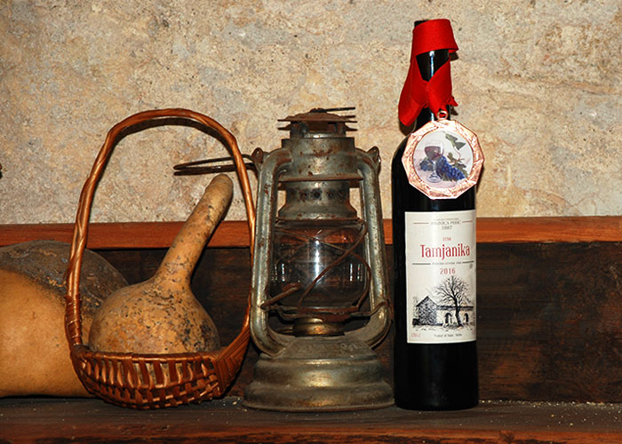
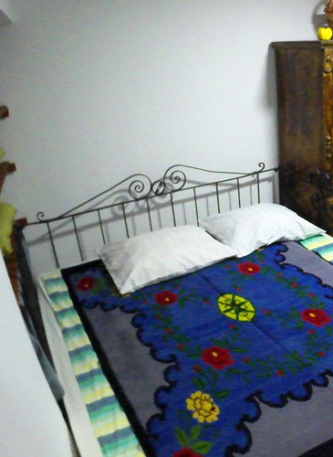
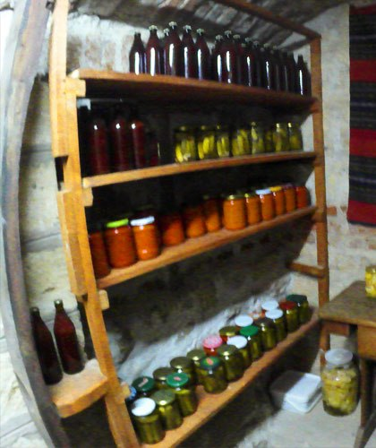
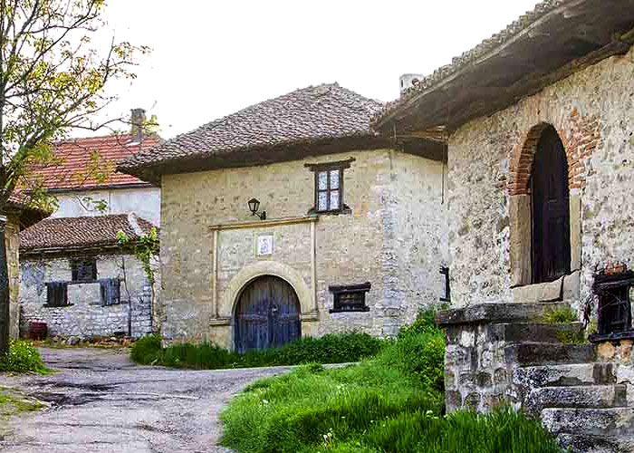
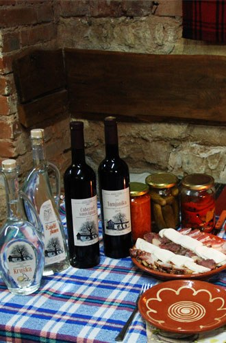
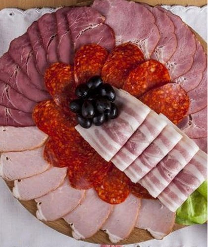
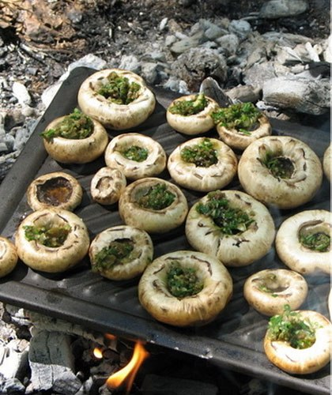
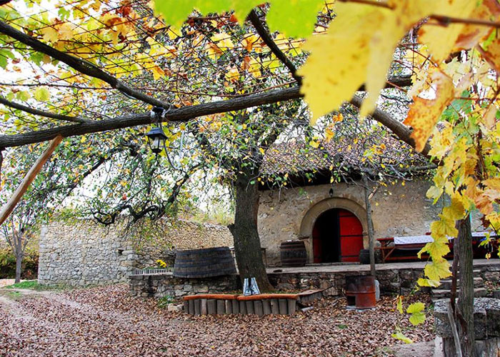

Vino iz kamena, od 1887.
Šest generacija porodice Perić neguje vino u podrumu ukopanom u Beli breg. Dođite na čašu, ostanite za trpezom, prenoćite u našem domaćinstvu.

Tradicija koju nismo nasledili, već stekli
Pimnica Perić stoji na samom ulazu u Rajačke pimnice, kameno vinsko naselje na Belom bregu iznad sela Rajac.
Zgrada je sagrađena 1887. godine, u vreme kada je filoksera uništila francuske vinograde, a negotinska vina važila za jedna od najboljih u Evropi i služila se na dvorovima i kraljevskim trpezama. Od tada, bez ijednog prekida, šest generacija naše porodice ovde pravi i neguje vino.

Vino, soba i trpeza
Podrum, porodično domaćinstvo i sto pod lozom — sve što čini dobar dan u Negotinskoj krajini.

Vina i rakije
Crna tamjanika, začinjak, cabernet sauvignon, chardonnay i rizling, sazreli u podrumu ukopanom u zemlju, i domaće rakije po starim receptima.
Pogledajte vina
Etno smeštaj
Pet soba za četrnaest gostiju u porodičnom domaćinstvu u selu Rajac, sa degustacionom salom, vinskim podrumom i špajzom punim zimnice.
Pogledajte sobe
Doživljaji
Degustacije na terasi pimnice, tradicionalna jela po bakinim receptima, proslave i druženja u kamenom ambijentu.
Šta vas čekaVina sa imenom kraja
Grožđe isključivo iz rajačkih vinograda, i sve više autohtonih sorti po kojima je ovo vinogorje poznato vekovima.
Sva vina i preporuke uz jelo


Prenoćite kod nas
U porodičnom domaćinstvu u selu Rajac, nadomak pimnica, čeka vas pet ukusno nameštenih soba sa starinskim nameštajem i ručno tkanim ćilimima.
- 5 soba, do 14 gostiju
- Degustaciona sala sa 30 mesta za doručak i večernja druženja
- Vinski podrum i špajz sa domaćom zimnicom
- Mir sela, a odmah uz regionalni put

Grad vina od kamena, kandidat za UNESCO
Na vrhu Belog brega, oko dva kilometra od sela, više od dve stotine kamenih podruma okupljeno je oko trga sa česmom. Zidane od tesanog kamena i pokrivene ćeramidom, pimnice su vekovima mesto gde se vino pravi i čuva.
Istorija pimnicaJela po bakinim receptima
Dimljeno meso iz naše pušnice, domaći sirevi, gibanica, proja i kačamak, pečurke na žaru — uz vino iz podruma ispod vaših nogu.




Praznici vinogradara
Sveti Trifun
Slava vinogradara: orezuje se prva loza, zaliva vinom i nazdravlja dobroj godini.
Sajam meda i vina
Međunarodna manifestacija u Negotinu na kojoj predstavljamo vina naše pimnice.
Berba grožđa
Učestvujte u tradicionalnoj berbi i proslavi koja je prati, kao što se ovde radi generacijama.
Žali bože izgubljenog vremena i gutljaja koji ni prineti nisu rajačkom vinu. Greh je tuđe ceniti, a svoje zaboraviti.Jovan Memedović

Najavite se, čekamo vas
Za smeštaj, degustaciju, ručak ili proslavu najbrže je da nas pozovete ili pišete porukom. Rado ćemo vam predložiti termin i ponudu po meri.
Otvoreno 365 dana u godini · Cene na upit